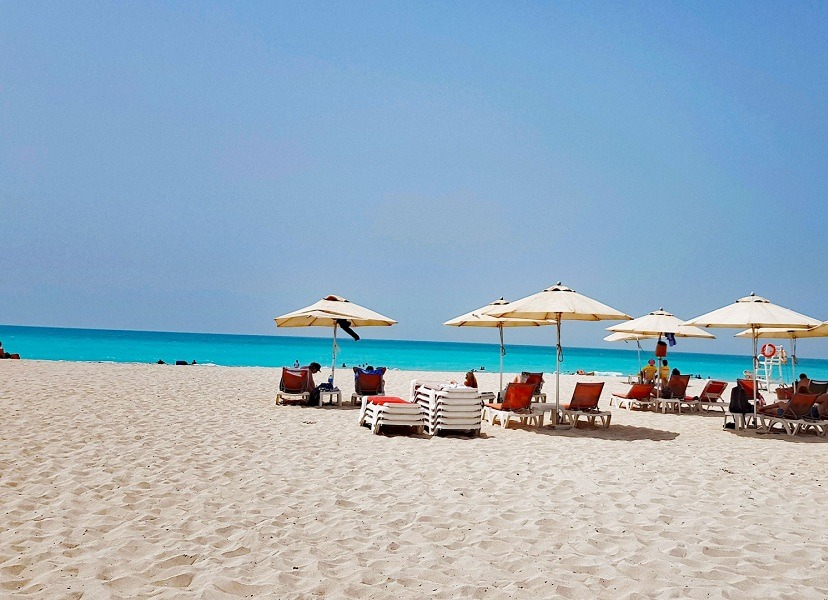
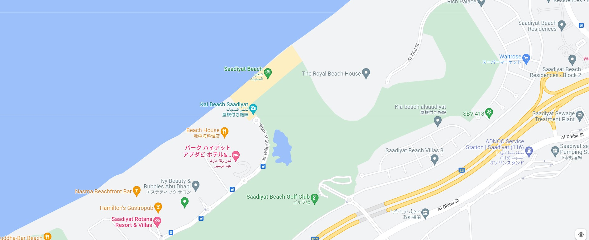

青い海、白い砂浜、サーディヤットビーチ

ペルシャ湾の沿岸として位置するこの砂浜は、アブダビの中でも特に美しいと言われるビーチです。
景色がとてもいいのに、観光客で混雑することが少なく、ゆっくりと過ごすことが出来るでしょう。
海は遠浅なので、プールのように泳ぐことも可能だそうです。
周辺には飲食店も多数点在しています。

いつかアブダビに行ったとき、一番暑いであろう昼の時間はここで泳いでみたいですね。